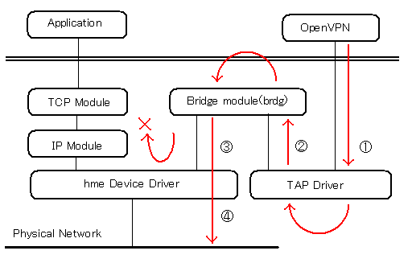

TAP driver for Solaris used for OpenVPN
|
This is a TAP driver for Solaris that can be used for
OpenVPN,
OpenConnect,
vpnc
The code is based on
Universal TUN/TAP driver.
I made changes somewhat and added some code to it for supporting Ethernet
tunneling feature, since Universal TUN/TAP driver for Solaris only supports
IP tunneling known as TUN.
Since there has not been TAP driver for Solaris, OpenVPN does not have code
for handling a TAP device for Solaris. So I also modified OpenVPN code somewhat,
and made it work with this TAP driver.
OpenVPN patch has been merged into OpenVPN 2.2.0.(2011.04.28).
Also, I wrote bridge moduel for Solaris, so that you can configure Solaris as bridge server.
After extracting tuntap.tar.gz file, run './configure', 'make', and 'make install' as usual.
Both 'tun' and 'tap' driver will be built and installed on your system. You can access
these devices through /dev/tun and /dev/tap.
| OpenVPN Version | Modified file | patch(diff -u ouputs) | Last Update |
| 2.0.7, 2.0.9 | tun.c.2.0.9 | patch.openvpn-2.0.9.tun.c | 20th May 2009 |
| 2.1.1 | tun.c.2.1.1 | patch.openvpn-2.1.1.tun.c | 29th Apr 2010 |
| 2.1.3 | tun.c.2.1.3 | patch.openvpn-2.1.3.tun.c | 31th Aug 2010 |
| 2.2.0 - | n/a | n/a |
$ patch -p1 < patch.openvpn-xxxx.tun.c
After extracting bridge.tar.gz file, run './configure', 'make', and 'make install'.
'brdg' and brdgadm will be built and installed on your system.
Where 'brdg' is a STREAMS module which enables briging 2 interfaces. And where
'brdgadm' is a configuration command to add/delete bridge interfaces.
Usage: brdgadm [ -a interface | -d interface] Options: -a interface : Add interface as port -d interface : Delete interface from port list -l : List all interfaces in port listSee following sample configuration.
------------- dev tap proto tcp-server server-bridge 10.0.0.90 255.0.0.0 10.0.0.10 10.0.0.30 client-to-client ca /etc/openvpn/keys/ca.crt cert /etc/openvpn/keys/u1.crt key /etc/openvpn/keys/u1.key # This file should be kept secret dh /etc/openvpn/keys/dh1024.pem --------------Then, run openvpn
# gunzip -c bridge.tar.gz | tar xvf -
# ./configure # make # make install
# /usr/local/bin/brdgadm -a tap0 # /usr/local/bin/brdgadm -a hme1where hme1 is a network interface connected with Network1. As a result, tap0 and hme1 is bridged. At this time, ifconfig looks like as below.
hme0: flags=1000843<UP,BROADCAST,RUNNING,MULTICAST,IPv4> mtu 1500 index 2
inet 172.29.73.90 netmask ffffff00 broadcast 172.29.73.255
ether 8:0:20:91:a6:90
hme1: flags=1000843<UP,BROADCAST,RUNNING,MULTICAST,IPv4> mtu 1500 index 4
inet 10.0.0.90 netmask ff000000 broadcast 10.255.255.255
ether 8:0:20:91:a6:90
tap0: flags=1000842<BROADCAST,RUNNING,MULTICAST,IPv4> mtu 1500 index 5
inet 0.0.0.0 netmask 0
ether a:0:20:14:32:52
------------ remote HostB proto tcp-client dev tap client persist-tun ca /etc/openvpn/keys/ca.crt cert /etc/openvpn/keys/onnv01.crt key /etc/openvpn/keys/onnv01.key -----------Then, run openvpn. At this time, ifconfig on HostC looks like as below.
hme0: flags=1000843<UP,BROADCAST,RUNNING,MULTICAST,IPv4> mtu 1500 index 2
inet 172.29.73.55 netmask ffffff00 broadcast 172.29.73.255
ether 8:0:20:c6:69:c7
tap0: flags=1000843<UP,BROADCAST,RUNNING,MULTICAST,IPv4> mtu 1500 index 4
inet 10.0.0.10 netmask ff000000 broadcast 10.255.255.255
ether a:0:20:53:71:52
But, please note that there's some limitation.. HostC can't communicate with HostB using a bridged IP address on HostB. I mean, ping 10.0.0.90 on HostC won't work.

Of course, HostC can communicate with all the other hosts on Network1, but.. it can't communicate with bridged IP address of bridge server.
One more note. Once openvpn running on HostB is terminated, bridge setting will be invalidated. So, after executing 2nd openvpn on HostB, you need to re-setup the bridge again.
First, you need to drop existing settings.
# /usr/local/bin/brdgadm -d hme1 # /usr/local/bin/brdgadm -d tap0Then, re-setup bridge.
# /usr/local/bin/brdgadm -a hme1 # /usr/local/bin/brdgadm -a tap0
This is a Solaris version of tunctl command which was originally written by Jeff Dike.
The tunctl command enables administrator to preconfigure a TUN/TAP device.
This command would be useful for testing, or for those who wants to use
tun/tap interface just as a virtual interface.
After extracting tuncntl.tar.gz file, run './configure', 'make', and 'make install'.
By default, tunctl command is installed in /usr/local/bin
NOTE:
This Solaris version of tunctl command doesn't support the -u option,
which enables administrator to specify an user who can use the interface.
Example)
Create tap0 interface
# /usr/local/bin/tunctl -t tap0 Set 'tap0' persistent #Delete tap0 interface
# /usr/local/bin/tunctl -d tap0 #
---
Kazuyoshi Aizawa <admin2@whiteboard.ne.jp>
28th Apr 2006
---
This page and illustrations above were downloaded for packaging from
http://www.whiteboard.ne.jp/~admin2/tuntap/
on 19th Nov 2016 and mildly modified (removed ad scripts and added this footer).